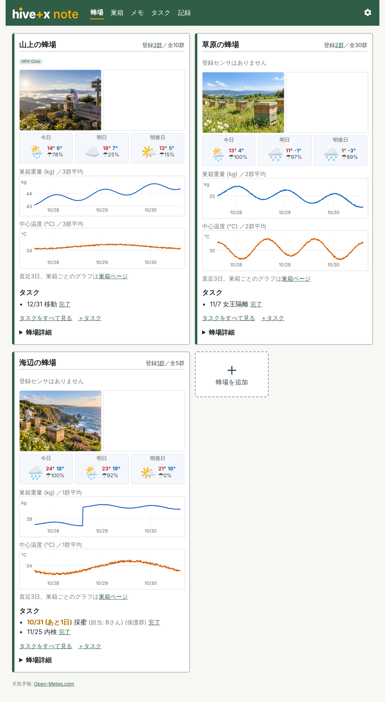
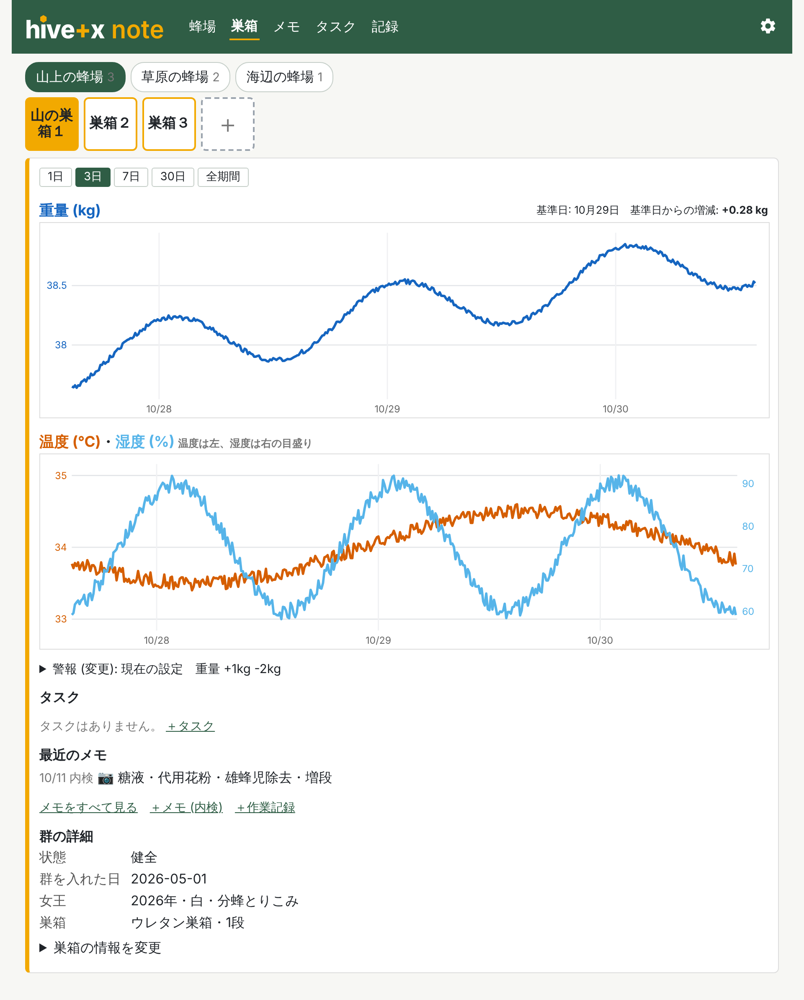
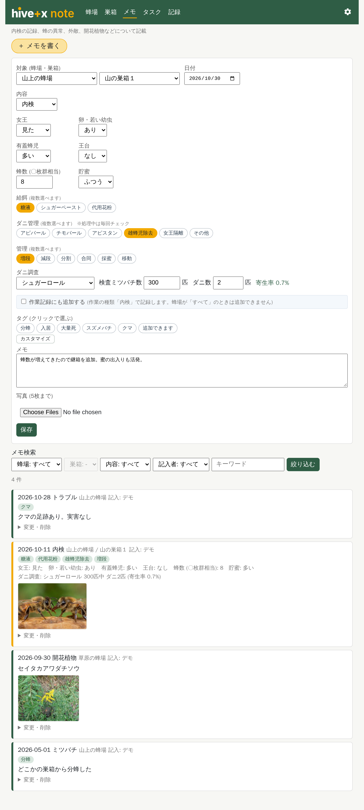
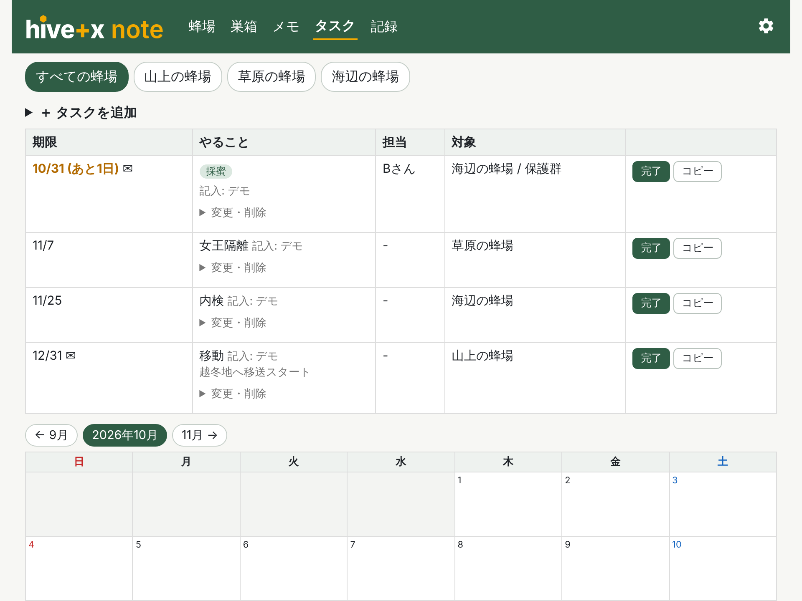
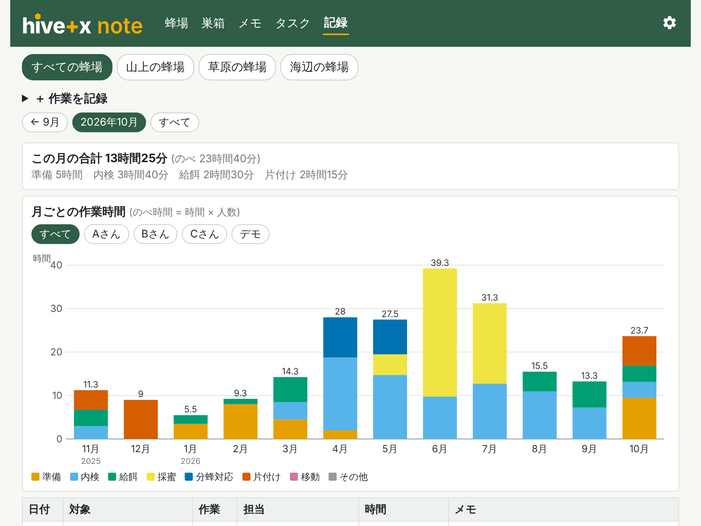

蜂場
いくつもの蜂場を並べて、天気と巣箱の様子をひと目で確かめられます。

12345678910111213- 巣箱の数登録した巣箱数と、蜂場全体の巣箱数
- ハブの状態蜂場に置いた HPX-Core が受信中かどうか
- 蜂場の写真蜂場ごとに写真を登録できます
- 地図緯度・経度を登録すると、蜂場の場所を Google マップで表示
- 3日間の天気今日・明日・明後日の気温と降水確率
- 巣箱の重さ直近3日の平均巣箱重量の変化（センサを複数入れると蜂場の傾向がわかります）
- 巣箱の温度直近3日の巣箱の中心温度の変化
- 巣箱ページへ巣箱ごとの詳しいグラフに移動します
- 蜂場のタスク設定日が近いタスクを表示。この画面から完了・追加もできます
- 蜂場詳細住所・地主さんの連絡先・巣箱数・HPX-Core などの登録内容
- 蜂場を追加＋から新しい蜂場を登録
- 重さの急な変化継箱や採蜜で重さが変わったこともグラフで分かります
- 期限が近いタスク色が変わり、担当者と対象の巣箱も表示
巣箱
巣箱ごとに、重さと温度・湿度の変化をグラフで表示します。

123456789- 蜂場を選ぶ蜂場名の横の数字はその蜂場の巣箱の数
- 巣箱を選ぶ蜂場の中の巣箱を切り替え。＋で巣箱を追加
- 表示する期間1日・3日・7日・30日・全期間を切り替えます
- 重さのグラフ基準日を決めて、その日からの増減も表示。蜜の貯まり具合の把握に
- 温度と湿度巣箱の中の温度と湿度を1つのグラフに表示
- 重さと温度の警報増減量が設定を超えたらメールでお知らせ
- 巣箱のタスクこの巣箱の予定を表示
- 最近のメモ内検の結果などを表示。ここからメモや作業記録も追加
- 群の詳細群の状態や導入日・女王・巣箱の種類などを記録しておきます
メモ
内検の結果や、蜂の様子、外敵、開花植物など“ミツバチと周辺”のメモを書き残せます。

1234567891011121314- メモを書く押すと入力欄が開きます
- 対象と日付蜂場全体、または巣箱ごとに記録ができます
- 内容内検・ミツバチ・トラブル・開花植物・その他などについて記録できます
- 内検の項目女王・卵・蜂児・王台・蜂数・貯蜜など主な項目は選ぶだけ
- 行った処置給餌・ダニ管理・管理をクリックで選択 (複数可)
- ダニ調査検査したミツバチ数と見つかったダニ数を入れると、寄生率を自動で計算
- 作業記録にも追加内検にかかった時間は作業記録と連動して残せます
- タグ分蜂・スズメバチ・クマなどよく使うキーワードはタグを押すだけ。自分で追加もできます
- メモ気づいたことを自由に
- 写真1つのメモに5枚まで
- メモを探す蜂場・巣箱・内容・記入者・キーワード検索できます
- 保存した内検選んだ項目と寄生率が一覧に並びます
- 開花植物どんな花がいつ咲いたかを写真と一緒に記録できます
- ミツバチの様子分蜂など、蜂の様子の記録
タスク
これからの作業を予定にして、チームで分担することもできます。

12345678- 蜂場を選ぶ蜂場ごと、または蜂場に限らない作業のタスクも入力可能
- タスクを追加やること・タグ・期限・担当・対象を入れて登録
- 担当と対象担当者は複数人でも入れられます。対象は蜂場か巣箱
- 期限近づくと色付きで「あと何日」と表示。✉ ：メールでお知らせします
- 完了・コピー終わったら完了に。同じタスクはコピーして、入力の手間を省きます
- 月を切り替え前の月・次の月のカレンダーへ
- 月のカレンダータスクをカレンダー形式で表示。
- Google カレンダータスクを自分のGoogleカレンダーにも表示できます
記録
作業にかかった時間を記録し、月ごと・人ごとに集計します。

1234567- 蜂場を選ぶ蜂場ごと、または蜂場に限定しない作業も記録します
- 作業を記録準備・内検・給餌・採蜜などの作業と時間
- この月の合計合計時間と、作業内容ごとの内訳を表示
- 人ごとに見るメンバーごとの作業時間に切り替えできます
- 12か月のグラフ作業時間を作業内容ごとに色分け
- 作業の一覧作業した人は複数選べます。時間×人数で、のべ時間も
- メモと連動内検メモを書くと、作業記録にも連動して自動で入ります
Guide
使い方ガイド
HPX-note の画面ごとの使い方です。見たい項目を押すと開きます。
はじめて使うときの流れ
- 管理者から届いた案内でログインする (ログインID はメールアドレス)
- 蜂場 で「＋ 蜂場を追加」から蜂場を登録する
- 巣箱 で、その蜂場に巣箱を登録する
- HPX-Core を使うときは、マイアカウント の「HPX-Core の接続 (機器用トークン)」にある 送信先の URL と トークン を、HPX-Core の管理画面の「動作設定」に入れる。HPX-Core から記録が届くと、センサ の画面に出る
- 蜂場の情報の変更で「この蜂場の HPX-Core」を選び、巣箱の情報の変更で「この巣箱のセンサ」(温湿度・重量) を選ぶ。選べるのは、その蜂場の HPX-Core に登録したセンサだけ
- あとはメモ・タスク・記録を書いていく
蜂場の画面
- 蜂場ごとのタイルに、巣箱の数、機器 (HPX-Core・電柵アラート) の状態、写真と地図、3日間の天気、巣箱の重さと中心温度の直近3日のグラフ、タスクが並びます
- 上の「タイル / 一覧 / 地図」で見せ方を変えられます。地図 には緯度・経度を入れた蜂場だけが点で出ます (青 = 正常、黄 = タスクあり、赤 = センサの異常)
- 一覧の「⇅ 並び替え」で、蜂場の順番をドラッグで変えられます
- 蜂場名を押すと、その蜂場だけのページになります
- 蜂場の情報を変更 で入れられるもの: 蜂場の名前 (必須)、所在地住所、緯度・経度 (「🗺 地図で選ぶ」で地図を押すと入る)、地主・連絡先、巣箱数、写真、天気予報のページ (好きな天気予報サービスの URL)、この蜂場の HPX-Core・電柵アラートセンサ・温湿度センサ (蜂場の気温・湿度として出す)、説明・備考、共有するチーム
- 天気のイラストを押すと、天気予報のページが開きます
巣箱の画面
- 上で蜂場を選び、四角い巣箱のボタンで巣箱を選びます。＋ で巣箱を追加
- 期間 (1日・3日・7日・30日・全期間) を選ぶと、重さと温度・湿度のグラフが出ます。グラフを押す (なぞる) と、その時刻の値が出ます
- 基準日 (採蜜した日など) を入れると、その日からの重さの増減も出ます
- 巣箱に重量センサが1台なら、巣箱の重さはセンサの値の2倍で計算します (片側だけ量るため)。2台なら合計です
- 蜂場に温湿度センサを選んでいると、蜂場の気温・湿度も同じグラフに出ます
- 警報: 重さや温度の上限・下限を入れると、15分ごとの見回りで超えたときにメールでお知らせします。空欄の項目は知らせません。警報を変えられるのは、蜂場の持ち主とチーム管理者だけです
- その巣箱のタスク・最近のメモ・群の詳細 (状態・群を入れた日・女王・巣箱の種類など) も出ます
- 巣箱に貼る QR コード: ラベルを印刷して巣箱に貼ると、スマホのカメラで読むだけで、その巣箱の内検メモを書く画面が開きます (ログインが必要)
メモの画面
- 「＋ メモを書く」で入力欄が開きます
- 対象: 蜂場と巣箱を選ぶ。蜂場を「すべて」にすると、どの蜂場にも出るメモになります
- 内容: 内検・ミツバチ・トラブル・開花植物・その他
- 内検の項目: 女王・卵・蜂児・王台・蜂数・貯蜜などを選ぶだけ。行った処置 (給餌・ダニ管理など) は複数選べます
- ダニ調査: 調査方法、検査したミツバチの数、見つけたダニの数を入れると、寄生率 (%) を計算します。メモの画面の下に、巣箱ごとの寄生率のグラフが出ます
- 作業記録にも追加: 内検にかかった時間を入れると、作業の記録 (種類「内検」) にも入ります
- 開花植物: 植物・咲き具合・ミツバチの訪花を選べます。一覧に無い植物は名前を書いて足せます
- タグ: 分蜂・スズメバチ・クマなど。押すだけで付けられ、「カスタマイズ」で増やせます
- 写真: 1つのメモに5枚まで
- 🎤: 音声入力 (話した言葉を文字にする。ブラウザの機能を使います)
- メモ検索で、蜂場・巣箱・内容・記入者・ことばで絞り込めます
タスクの画面
- これからやる作業を予定にします。やること か タグ のどちらかを入れ、期限・担当者 (複数可)・対象 (蜂場・巣箱)・メモを入れます
- 期限が近いと色が付き「あと何日」と出ます。お知らせをオンにすると、期限の日の朝にメールでお知らせします (担当者全員へ)
- 各タスクの 完了・コピー・変更・削除。コピーで、ほかの蜂場にも同じタスクを作れます
- 下の月のカレンダーで、日にちを押すとその日が期限のタスクを書け、タスクを押すと詳しい内容が開きます
- 📅 タスクを Google カレンダーに表示する: 出てくる URL を Google カレンダーの「URL で追加」に貼ると、期限のある未完了のタスクが自分のカレンダーに出ます (HPX-note からカレンダーへの一方向)
記録 (作業記録) の画面
- 作業の種類 (準備・内検・給餌・採蜜など)、日付、かかった時間 (開始と終了、または分)、作業した人 (複数可)、人数、メモを記録します
- 種類が「採蜜」のときは、採蜜量 (kg) も入れられます。月ごとの採蜜量のグラフが出ます
- この月の合計時間と内訳、人ごとの作業時間、12か月の作業時間のグラフが出ます。のべ時間 = 時間 × 人数
- 作業の種類は「カスタマイズ」で足す・外す・並べ替えができます
センサの画面 (歯車 → センサ)
- 自分のアカウントにつないだ HPX-Core ごとに、最後に届いた時刻、ファームウェアの版、電池の電圧、Wi-Fi の電波などを出します (5分ごとに自動で更新)
- 温湿度計・重量センサ・電柵アラート (HPX-F)・バッテリー (HPX-B) の記録と、グラフを出します
- 温度・湿度の補正: 温湿度計ごとに、温度・湿度をずらして表示できます (記録はそのまま)
- 重量: 重さの較正は HPX-Core の管理画面で行います。センサの画面では「ゼロリセット」(今の重さを0にする) ができます
- データ (CSV): 記録を Excel で開ける CSV でダウンロードできます。「定時記録データ」は保存間隔 (15分など) ごとに1行、「全データ」は届いた記録すべて
- HPX-Core をアカウントから外す・元に戻す、記録を消す (データクリア) もここです
チーム (歯車 → チーム)
- 同じ蜂場を何人かで管理するときに使います
- 「＋ チームを作る」で作った人がチーム管理者になります。メンバーは、アカウントのある人をメールアドレスで追加します (アカウントの無い人は、サーバー管理者に作ってもらう)
- 「＋ 蜂場を共有」で、自分の蜂場をチームに見せます。共有した蜂場のメモ・タスク・記録は、メンバーも見たり書いたりできます (役割による)
- チームを消しても、蜂場・メモ・記録は持ち主のところに残ります
マイアカウント (歯車 → マイアカウント)
- 表示名、パスワードの変更、メールアドレス (ログインID) の変更
- 通知メールの送り先: 空なら、ログインのメールアドレスへ送ります
- お知らせメールのオン/オフ: 種類ごとに止められます。全部止めると、電柵の電圧低下にも気づけないので注意
- LINE でお知らせを受け取る: 連携コードを出して、LINE公式アカウントのトークに送ると連携します (サーバーで LINE の設定がされているときだけ)
- HPX-Core の接続 (機器用トークン): HPX-Core の管理画面に入れる送信先の URL とトークン。トークンは人に見せないでください。作り直すと、つないでいるすべての HPX-Core に入れ直しが要ります
- データ一括ダウンロード: 蜂場・巣箱・メモ・タスク・記録・センサの記録を CSV の ZIP で保存
- バックアップと復元: 自分の蜂場・メモなどを1つのファイルに保存し、あとで戻せます
- データの利用について: 研究や AI の学習に記録を使うことへの同意
AIメモ・記録 (サーバーで AI が使えるときだけ)
- 「山の蜂場の1番を内検、王台2つ、30分」のように話し言葉で書く (🎤 も使える) と、AI がどの蜂場・巣箱か、メモか作業記録かタスクかを読み取ります。確かめて直してから「記録する」を押します
- 「📷 手書きの記録の写真から」で、ノートや記録用紙の写真を読み取ることもできます
- 直したところを AI が覚えて、次から読み取りに使います (「AI が覚えたこと」で見る・直す・消す)
- LINE と連携していれば、LINE のトークに送っても記録できます
- 1日に使える回数には上限があります
カメラ (HPX-CAM を使っているときだけ)
- 蜂場に置いた HPX-CAM の写真を見られます。各日の12時ごろの写真が並び、押すとその日の写真をスライドやパラパラ再生で見られます
- カメラの設定で、置いている蜂場・撮っている巣箱・撮影の間隔・時間帯を決めます
- 写真が大きく変わったとき (巣箱が倒れた、人が来たなど) にお知らせを送ることもできます
- 写真は一定の日数で消えるので、残したい写真は手元に保存してください
電波の無い蜂場で使う (オフライン)
- 一度開いたページは端末に保存され、電波が無くても見られます
- 電波が無いときも、メモ・作業記録・タスクを書く・変える・完了にすることができます。書いたものは「送信待ち」になり、電波のある所で HPX-note を開くと自動で送ります
- iPhone は、HPX-note を閉じている間には送れません。電波のある所でもう一度開いてください
- ホーム画面に追加すると、アプリのように使えます
- ログアウトすると、端末に保存したページと送信待ちは消えます
お知らせ (メール・LINE) が届くとき
- 電柵の電圧低下、巣箱の重さ・温度の警報、センサや HPX-Core の電池の残り・記録が届かない、タスクの期限、カメラの大きな変化 など
- 届かないときは、マイアカウントの「通知メールの送り先」と「お知らせメールのオン/オフ」、迷惑メールのフォルダを確かめてください
デモ用アカウント
- 見本のデータが入ったアカウントで、画面を自由に試せます。設定・チームの変更、メールの送信などはできません。毎日決まった時刻に元に戻ります
分からないことは AI ヘルプ でも聞けます。